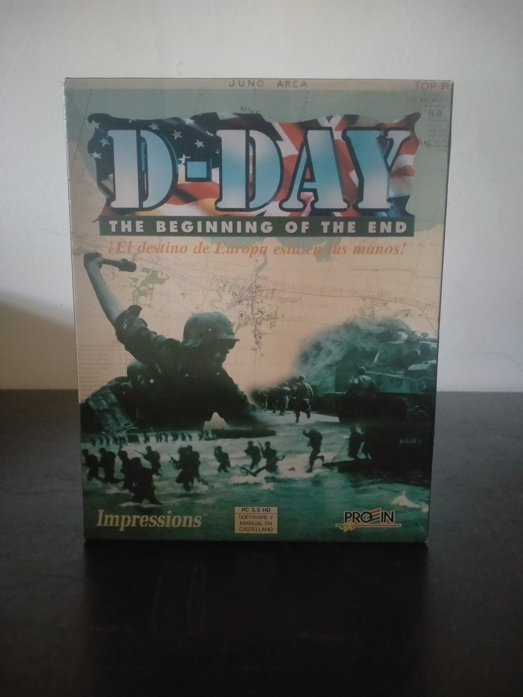

Ficha #000120
D-Day: The Beginning of the End
D-Day: The Beginning of the End es un wargame histórico de 1994 desarrollado por Impressions Games y centrado en la campaña aliada posterior al desembarco de Normandía durante la Segunda Guerra Mundial. El jugador asume el mando de fuerzas aliadas o alemanas en un sistema estratégico-operacional que combina planificación de campañas, refuerzo de divisiones, resultados de batalla, seguimiento a nivel de campaña y combates tácticos con microminiaturas sobre terreno detallado. La obra forma parte de la línea de estrategia histórica de Impressions previa a su consolidación masiva con los city builders, y refleja una etapa del PC en la que los wargames tradicionales de tablero se trasladaban al ordenador manteniendo profundidad, documentación histórica y gestión militar compleja. Esta edición española en caja grande distribuida por Proein incluye software y manual en castellano, soporte en disquete de 3,5 pulgadas HD y conserva especial interés documental dentro del catálogo de estrategia bélica para compatibles PC de mediados de los noventa.
- Formato
- Big Box
- Plataforma
- MsDos
- Género
- Estrategia por turnos Wargame Simulación bélica Estrategia histórica Segunda Guerra Mundial
- Serie
- Todos Big Box
- Desarrollador
- Impressions Games
- Distribuidor
- Impressions Games, Proein
- EAN
- —
Contenido de la edición
- Caja Big Box
- Manual en castellano
- Disquete de 3,5 pulgadas HD
- Documentación Proein
Preservación
- Protección
- No determinado
- Formato recomendado
- Otro
- Jugable en virtualización
- Sí
Edición en disquete de 3,5 pulgadas HD. Para preservación se recomienda realizar imagen completa del disquete original, documentar etiqueta y numeración del soporte, verificar instalación y ejecución en entorno MS-DOS o DOSBox, y conservar digitalizado el manual en castellano por su valor operativo y documental. No hay evidencia suficiente para confirmar un sistema anticopia concreto en la edición mostrada.